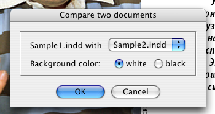
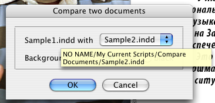

Compare two documents
Script for InDesign CS3 and CS4 version 1.5
The idea to develop this script came to me after I read Document Differencing article written by Mike Rankin at indesignsecrets.com. The script compares two documents and finds the differences between them — even the slightest ones — for example, a missing comma.
The documents should be identical in certain aspects: page orientation an facing pages parameters should be the same, both documents should contain the same number of pages, etc.
When you start the script, a dialog appears with the name of the frontmost document at left. Choose the other document from the dropdown list.

If you opened two or more documents that have the same name but saved in different locations, hold the cursor over the dropdown list or the name of the active document for a while — a help tip will show up with full path of the file.

Select background color: white or black and click OK.
The script will create a new, temporary document. If both of the documents are absolutely identical, all pages will be white (or black), if not you will see the areas where the differ.
White background selected.
Black background selected.
Click here to download the script.
You can also download a couple of sample documents on which you can test it and see how it works.
Note: they are from CS3, if you are on CS4 save them after conversion..